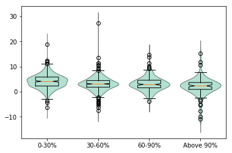
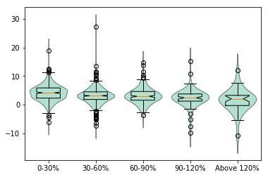

Reinhart-Rogoff replication¶
- Replication of Reinhart-Rogoff “Growth in a Time of Debt.”
- Python port of R code by Thomas Herndon | Michael Ash | Robert Pollin
- http://www.peri.umass.edu/236/hash/31e2ff374b6377b2ddec04deaa6388b1/publication/566/
- Author: Vincent Arel-Bundock varel@umich.edu
- Data: https://gist.github.com/vincentarelbundock/5409893/raw/a623f2f3bae027a0e51dd01ac5b70d44d909a7b9/RR-processed.csv
In [1]:
%matplotlib inline
import statsmodels.api as sm
import patsy
import pandas as pd
import numpy as np
import matplotlib.pyplot as plt
RR = pd.read_csv('RR-processed.csv')
/Users/fperez/usr/conda/envs/s159/lib/python3.6/site-packages/statsmodels/compat/pandas.py:56: FutureWarning: The pandas.core.datetools module is deprecated and will be removed in a future version. Please use the pandas.tseries module instead.
from pandas.core import datetools
Number of observations per country¶
In [2]:
RR.groupby('Country').size()
Out[2]:
Country
Australia 64
Austria 62
Belgium 63
Canada 64
Denmark 56
Finland 64
France 54
Germany 59
Greece 40
Ireland 63
Italy 59
Japan 54
Netherlands 53
New Zealand 64
Norway 64
Portugal 58
Spain 42
Sweden 64
UK 64
US 64
dtype: int64
Bins¶
In [3]:
bins = ["0-30%","30-60%","60-90%","Above 90%"]
RR['dgcat'] = np.digitize(RR.debtgdp, [0,30,60,90,np.inf]) - 1
RR.dgcat = [bins[x] for x in RR.dgcat]
bins = ["0-30%","30-60%","60-90%","90-120%","Above 120%"]
RR['dgcat2'] = np.digitize(RR.debtgdp, [0,30,60,90,120,np.inf]) - 1
RR.dgcat2 = [bins[x] for x in RR.dgcat2]
Regression analysis¶
In [6]:
y,X = patsy.dmatrices('dRGDP ~ dgcat', data=RR[['dRGDP', 'dgcat']].dropna())
sm.OLS(y,X).fit().summary()
Out[6]:
| Dep. Variable: | dRGDP | R-squared: | 0.045 |
|---|---|---|---|
| Model: | OLS | Adj. R-squared: | 0.042 |
| Method: | Least Squares | F-statistic: | 18.36 |
| Date: | Thu, 30 Nov 2017 | Prob (F-statistic): | 1.22e-11 |
| Time: | 01:38:49 | Log-Likelihood: | -2927.9 |
| No. Observations: | 1175 | AIC: | 5864. |
| Df Residuals: | 1171 | BIC: | 5884. |
| Df Model: | 3 | ||
| Covariance Type: | nonrobust |
| coef | std err | t | P>|t| | [0.025 | 0.975] | |
|---|---|---|---|---|---|---|
| Intercept | 4.1735 | 0.142 | 29.413 | 0.000 | 3.895 | 4.452 |
| dgcat[T.30-60%] | -1.0814 | 0.199 | -5.429 | 0.000 | -1.472 | -0.691 |
| dgcat[T.60-90%] | -0.9869 | 0.251 | -3.931 | 0.000 | -1.479 | -0.494 |
| dgcat[T.Above 90%] | -2.0056 | 0.313 | -6.403 | 0.000 | -2.620 | -1.391 |
| Omnibus: | 208.322 | Durbin-Watson: | 1.385 |
|---|---|---|---|
| Prob(Omnibus): | 0.000 | Jarque-Bera (JB): | 1757.480 |
| Skew: | 0.558 | Prob(JB): | 0.00 |
| Kurtosis: | 8.887 | Cond. No. | 4.57 |
In [7]:
y2,X2 = patsy.dmatrices('dRGDP ~ dgcat2', data=RR[['dRGDP', 'dgcat2']].dropna())
sm.OLS(y2,X2).fit().summary()
Out[7]:
| Dep. Variable: | dRGDP | R-squared: | 0.046 |
|---|---|---|---|
| Model: | OLS | Adj. R-squared: | 0.043 |
| Method: | Least Squares | F-statistic: | 14.24 |
| Date: | Thu, 30 Nov 2017 | Prob (F-statistic): | 2.36e-11 |
| Time: | 01:38:54 | Log-Likelihood: | -2926.9 |
| No. Observations: | 1175 | AIC: | 5864. |
| Df Residuals: | 1170 | BIC: | 5889. |
| Df Model: | 4 | ||
| Covariance Type: | nonrobust |
| coef | std err | t | P>|t| | [0.025 | 0.975] | |
|---|---|---|---|---|---|---|
| Intercept | 4.1735 | 0.142 | 29.423 | 0.000 | 3.895 | 4.452 |
| dgcat2[T.30-60%] | -1.0814 | 0.199 | -5.431 | 0.000 | -1.472 | -0.691 |
| dgcat2[T.60-90%] | -0.9869 | 0.251 | -3.933 | 0.000 | -1.479 | -0.495 |
| dgcat2[T.90-120%] | -1.7676 | 0.359 | -4.929 | 0.000 | -2.471 | -1.064 |
| dgcat2[T.Above 120%] | -2.6120 | 0.545 | -4.796 | 0.000 | -3.680 | -1.543 |
| Omnibus: | 210.356 | Durbin-Watson: | 1.388 |
|---|---|---|---|
| Prob(Omnibus): | 0.000 | Jarque-Bera (JB): | 1756.317 |
| Skew: | 0.570 | Prob(JB): | 0.00 |
| Kurtosis: | 8.880 | Cond. No. | 7.10 |
Table 3 Corrected¶
In [8]:
## Country-Year average by debtgdp ("correct weights")
RR.dRGDP.groupby(RR.dgcat).mean()
Out[8]:
dgcat
0-30% 4.173523
30-60% 3.092145
60-90% 3.186575
Above 90% 2.167972
Name: dRGDP, dtype: float64
In [9]:
## Averaged Country averages by debtgdp ("equal weights")
RR.dRGDP.groupby([RR.Country, RR.dgcat]).mean().unstack()
Out[9]:
| dgcat | 0-30% | 30-60% | 60-90% | Above 90% |
|---|---|---|---|---|
| Country | ||||
| Australia | 3.205885 | 4.947205 | 4.042175 | 3.774250 |
| Austria | 5.207527 | 3.256526 | -3.824000 | NaN |
| Belgium | NaN | 4.191655 | 3.079868 | 2.566828 |
| Canada | 2.515704 | 3.525446 | 4.523574 | 2.956640 |
| Denmark | 3.518584 | 1.700034 | 2.391147 | NaN |
| Finland | 3.817029 | 2.418535 | 5.488887 | NaN |
| France | 5.058476 | 2.616159 | 3.019631 | NaN |
| Germany | 3.873759 | 0.875803 | NaN | NaN |
| Greece | 4.001282 | 0.340200 | 2.696000 | 2.910632 |
| Ireland | 4.209251 | 4.452167 | 3.950139 | 2.428571 |
| Italy | 5.352632 | 2.054284 | 1.771529 | 1.028900 |
| Japan | 7.331001 | 3.957143 | 1.008411 | 0.687258 |
| Netherlands | 4.082614 | 2.620772 | 1.070436 | NaN |
| New Zealand | 2.465556 | 2.889572 | 3.883683 | 2.574727 |
| Norway | 3.400122 | 5.108289 | 10.201270 | NaN |
| Portugal | 4.451419 | 3.549482 | 1.893899 | NaN |
| Spain | 1.549332 | 3.398669 | 4.156250 | NaN |
| Sweden | 3.567385 | 2.932237 | 2.665824 | NaN |
| UK | NaN | 2.231213 | 2.522133 | 2.399096 |
| US | NaN | 3.370208 | 3.264068 | -1.988893 |
In [10]:
## Country-Year average by debtgdp ("correct weights") expanded categories
RR.dRGDP.groupby(RR.dgcat2).mean()
Out[10]:
dgcat2
0-30% 4.173523
30-60% 3.092145
60-90% 3.186575
90-120% 2.405934
Above 120% 1.561553
Name: dRGDP, dtype: float64
In [11]:
## Averaged Country averages by debtgdp ("equal weights")
RR.dRGDP.groupby([RR.Country, RR.dgcat2]).mean().unstack()
Out[11]:
| dgcat2 | 0-30% | 30-60% | 60-90% | 90-120% | Above 120% |
|---|---|---|---|---|---|
| Country | |||||
| Australia | 3.205885 | 4.947205 | 4.042175 | 6.920201 | 2.987763 |
| Austria | 5.207527 | 3.256526 | -3.824000 | NaN | NaN |
| Belgium | NaN | 4.191655 | 3.079868 | 2.702629 | -0.692378 |
| Canada | 2.515704 | 3.525446 | 4.523574 | 4.544839 | 0.574341 |
| Denmark | 3.518584 | 1.700034 | 2.391147 | NaN | NaN |
| Finland | 3.817029 | 2.418535 | 5.488887 | NaN | NaN |
| France | 5.058476 | 2.616159 | 3.019631 | NaN | NaN |
| Germany | 3.873759 | 0.875803 | NaN | NaN | NaN |
| Greece | 4.001282 | 0.340200 | 2.696000 | 2.910632 | NaN |
| Ireland | 4.209251 | 4.452167 | 3.950139 | 2.428571 | NaN |
| Italy | 5.352632 | 2.054284 | 1.771529 | 1.028900 | NaN |
| Japan | 7.331001 | 3.957143 | 1.008411 | 1.359564 | 0.537857 |
| Netherlands | 4.082614 | 2.620772 | 1.070436 | NaN | NaN |
| New Zealand | 2.465556 | 2.889572 | 3.883683 | -2.256588 | 9.821699 |
| Norway | 3.400122 | 5.108289 | 10.201270 | NaN | NaN |
| Portugal | 4.451419 | 3.549482 | 1.893899 | NaN | NaN |
| Spain | 1.549332 | 3.398669 | 4.156250 | NaN | NaN |
| Sweden | 3.567385 | 2.932237 | 2.665824 | NaN | NaN |
| UK | NaN | 2.231213 | 2.522133 | 3.303428 | 1.871568 |
| US | NaN | 3.370208 | 3.264068 | 0.995529 | -10.942159 |
Selective treatment of early years¶
In [12]:
idx = (RR.Country == 'New Zealand') & (RR.Year < 1950) | (RR.Country == 'Australia') & (RR.Year < 1951) | (RR.Country == 'Canada') & (RR.Year < 1951)
RR_selective = RR[idx == False]
RR_selective.dRGDP.groupby(RR_selective.dgcat).mean()
Out[12]:
dgcat
0-30% 4.173523
30-60% 3.092145
60-90% 3.186575
Above 90% 1.919934
Name: dRGDP, dtype: float64
Equal weights¶
Table 3 Weights,Exclusion¶
In [13]:
RR_selective.mean()
Out[13]:
Unnamed: 0 5.916408e+02
Year 1.979633e+03
Debt 1.621458e+07
RGDP 2.369173e+05
GDP 1.957611e+05
dRGDP 3.408270e+00
GDPI 5.034180e+01
GDP1 1.470725e+07
GDP2 1.824865e+07
RGDP1 1.425590e+07
RGDP2 3.072470e+07
GDPI1 5.589542e+02
GDPI2 8.690705e+01
Infl 5.632643e+00
Debt1 5.625405e+05
Debt2 1.050730e+05
Debtalt 1.006665e+07
GDP2alt 4.450790e+05
GDPalt 2.079659e+06
RGDP2alt 1.033331e+05
debtgdp 4.530375e+01
GDP3 7.689113e+04
GNI 5.156239e+08
lRGDP 2.351587e+05
lRGDP1 1.405853e+07
lRGDP2 3.047113e+07
dtype: float64
Correct weights¶
Table 3 Selective years exclusion¶
In [14]:
RR_selective.dRGDP.groupby([RR_selective.Country, RR_selective.dgcat]).mean().unstack()
Out[14]:
| dgcat | 0-30% | 30-60% | 60-90% | Above 90% |
|---|---|---|---|---|
| Country | ||||
| Australia | 3.205885 | 4.947205 | 4.042175 | NaN |
| Austria | 5.207527 | 3.256526 | -3.824000 | NaN |
| Belgium | NaN | 4.191655 | 3.079868 | 2.566828 |
| Canada | 2.515704 | 3.525446 | 4.523574 | NaN |
| Denmark | 3.518584 | 1.700034 | 2.391147 | NaN |
| Finland | 3.817029 | 2.418535 | 5.488887 | NaN |
| France | 5.058476 | 2.616159 | 3.019631 | NaN |
| Germany | 3.873759 | 0.875803 | NaN | NaN |
| Greece | 4.001282 | 0.340200 | 2.696000 | 2.910632 |
| Ireland | 4.209251 | 4.452167 | 3.950139 | 2.428571 |
| Italy | 5.352632 | 2.054284 | 1.771529 | 1.028900 |
| Japan | 7.331001 | 3.957143 | 1.008411 | 0.687258 |
| Netherlands | 4.082614 | 2.620772 | 1.070436 | NaN |
| New Zealand | 2.465556 | 2.889572 | 3.883683 | -7.635102 |
| Norway | 3.400122 | 5.108289 | 10.201270 | NaN |
| Portugal | 4.451419 | 3.549482 | 1.893899 | NaN |
| Spain | 1.549332 | 3.398669 | 4.156250 | NaN |
| Sweden | 3.567385 | 2.932237 | 2.665824 | NaN |
| UK | NaN | 2.231213 | 2.522133 | 2.399096 |
| US | NaN | 3.370208 | 3.264068 | -1.988893 |
And dropping because of spreadsheet error¶
In [15]:
drop = ["Australia","Austria","Belgium","Canada","Denmark"]
idx = [False if x in drop else True for x in RR_selective.Country]
RR_selective_spreadsheet = RR_selective[idx]
RR_selective_spreadsheet.dRGDP.groupby(RR.dgcat).mean()
Out[15]:
dgcat
0-30% 4.236391
30-60% 2.958902
60-90% 3.160164
Above 90% 1.692155
Name: dRGDP, dtype: float64
New Zealand transcription error¶
In [33]:
RR_selective_spreadsheet_transcription = RR_selective_spreadsheet.copy()
RR_selective_spreadsheet_transcription.RGDP[RR_selective_spreadsheet_transcription.Country=='New Zealand'] = -7.9
RR_selective_spreadsheet_transcription.dRGDP.groupby(RR.dgcat).mean()
/Users/fperez/usr/conda/envs/s159/lib/python3.6/site-packages/ipykernel_launcher.py:2: SettingWithCopyWarning:
A value is trying to be set on a copy of a slice from a DataFrame
See the caveats in the documentation: http://pandas.pydata.org/pandas-docs/stable/indexing.html#indexing-view-versus-copy
Out[33]:
dgcat
0-30% 4.236391
30-60% 2.958902
60-90% 3.160164
Above 90% 1.692155
Name: dRGDP, dtype: float64
In [34]:
a = RR_selective_spreadsheet_transcription.Country
b = RR_selective_spreadsheet_transcription.dgcat
RR_selective_spreadsheet_transcription.dRGDP.groupby(b).mean()
Out[34]:
dgcat
0-30% 4.236391
30-60% 2.958902
60-90% 3.160164
Above 90% 1.692155
Name: dRGDP, dtype: float64
In [31]:
published_means = RR_selective_spreadsheet_transcription.dRGDP.groupby([a,b]).mean().unstack()
published_means.loc['New Zealand', 'Above 90%'] = -7.9
published_means.mean()
Out[31]:
dgcat
0-30% 4.089220
30-60% 2.854316
60-90% 3.399440
Above 90% -0.062062
dtype: float64
Medians¶
In [19]:
RR.dRGDP.groupby(RR.dgcat).median() # Correct, equal weight
Out[19]:
dgcat
0-30% 4.145376
30-60% 3.104629
60-90% 2.897829
Above 90% 2.335324
Name: dRGDP, dtype: float64
In [20]:
RR.dRGDP.groupby(RR.dgcat2).median() # Correct, expanded categories, equal weight
Out[20]:
dgcat2
0-30% 4.145376
30-60% 3.104629
60-90% 2.897829
90-120% 2.373340
Above 120% 2.039469
Name: dRGDP, dtype: float64
Counts of years¶
In [21]:
RR.Country.groupby([RR.Country, RR.dgcat]).size().unstack().sum()
Out[21]:
dgcat
0-30% 426.0
30-60% 439.0
60-90% 200.0
Above 90% 110.0
dtype: float64
In [22]:
RR_selective.Country.groupby([RR.Country, RR.dgcat]).size().unstack().sum()
Out[22]:
dgcat
0-30% 426.0
30-60% 439.0
60-90% 200.0
Above 90% 96.0
dtype: float64
In [23]:
RR_selective_spreadsheet.Country.groupby([RR.Country, RR.dgcat]).size().unstack().sum()
Out[23]:
dgcat
0-30% 329.0
30-60% 324.0
60-90% 138.0
Above 90% 71.0
dtype: float64
Categorical scatterplot¶
In [25]:
labels = ["0-30%","30-60%","60-90%","Above 90%"]
dat = [np.array(RR.dRGDP[RR.dgcat==x]) for x in labels]
sm.graphics.violinplot(dat, labels=labels);

In [27]:
labels = ["0-30%","30-60%","60-90%","90-120%","Above 120%"]
dat = [np.array(RR.dRGDP[RR.dgcat2==x]) for x in labels]
sm.graphics.violinplot(dat, labels=labels);

Country-Year average by debtgdp for more recent samples¶
In [28]:
years = range(1950, 2001, 10)
f = lambda x: (x, RR[RR.Year >= x].dRGDP.groupby(RR[RR.Year >= x].dgcat).mean())
[f(x) for x in years]
Out[28]:
[(1950, dgcat
0-30% 4.135295
30-60% 2.980839
60-90% 3.100982
Above 90% 2.121852
Name: dRGDP, dtype: float64), (1960, dgcat
0-30% 3.895619
30-60% 2.909601
60-90% 2.779663
Above 90% 2.074064
Name: dRGDP, dtype: float64), (1970, dgcat
0-30% 3.145224
30-60% 2.644951
60-90% 2.559289
Above 90% 1.959229
Name: dRGDP, dtype: float64), (1980, dgcat
0-30% 2.541408
30-60% 2.451346
60-90% 2.435681
Above 90% 1.959229
Name: dRGDP, dtype: float64), (1990, dgcat
0-30% 2.669334
30-60% 2.403622
60-90% 2.457587
Above 90% 1.823201
Name: dRGDP, dtype: float64), (2000, dgcat
0-30% 2.747593
30-60% 1.881735
60-90% 1.290506
Above 90% 1.745087
Name: dRGDP, dtype: float64)]